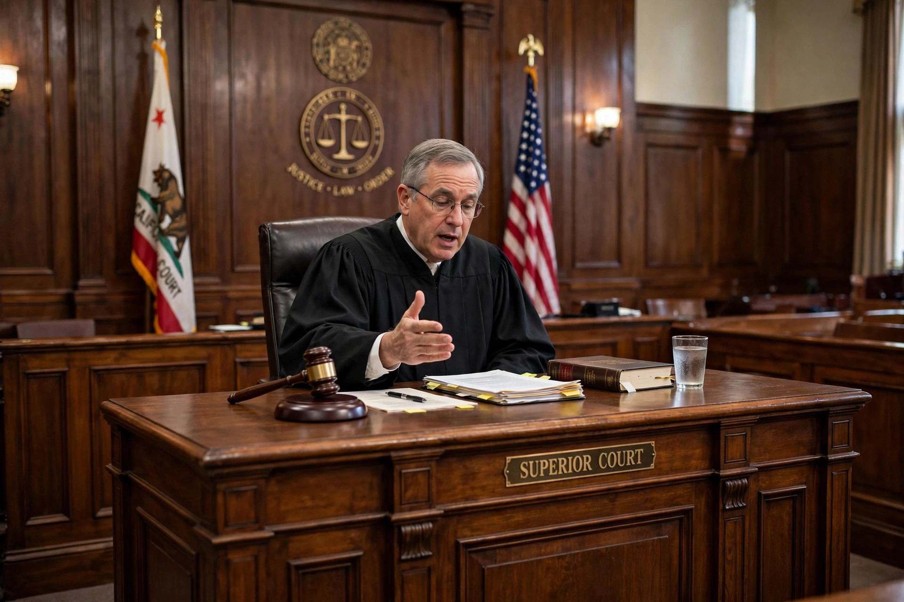

From Wikipedia, the free encyclopedia

In a jury trial, a directed verdict is an order from the presiding judge to the jury to return a particular verdict. Typically, a judge orders a directed verdict after finding that no reasonable jury could reach a contrary conclusion on the evidence presented. The order is made without the jury's deliberation and disposes of the case (or an issue within it) as a matter of law.
A party — usually the defendant, at the close of the claimant's case or at the close of all the evidence — moves for a directed verdict on the ground that the opposing party has failed to present sufficient evidence to support a verdict in its favour. In deciding, the court views the evidence in the light most favourable to the non-moving party and asks whether a reasonable jury would have a legally sufficient evidentiary basis to find for that party.
In United States federal practice, the Federal Rules of Civil Procedure replaced the directed verdict with the motion for judgment as a matter of law (Rule 50) in 1991, partly out of respect for the Seventh Amendment right to jury trial; the closely related post-verdict motion historically called judgment notwithstanding the verdict (JNOV) is now the renewed motion for judgment as a matter of law. In criminal cases, a judge may direct a verdict of acquittal where the prosecution's evidence is insufficient, but may never direct a verdict of guilty, since the accused has a constitutional right to have a jury decide guilt.